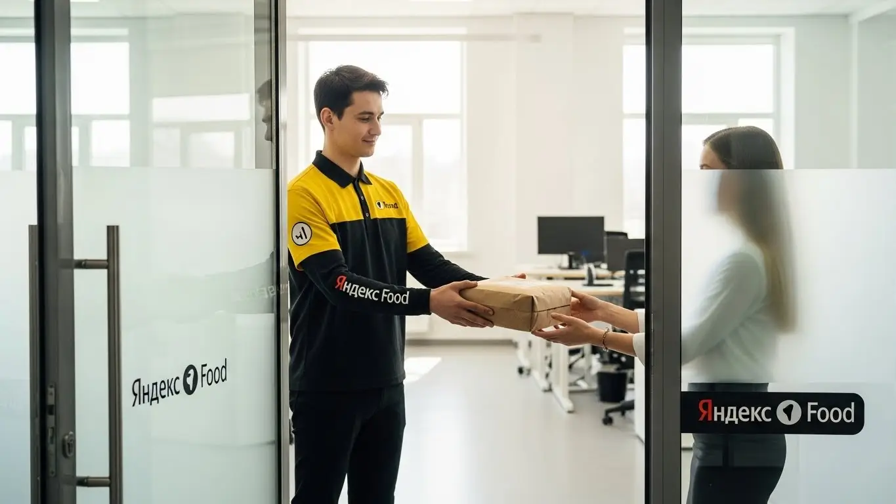

Работа курьером Яндекс Еды в Сочи 2025-2026: доход, график, условия
- Работа курьером Яндекс Еды в Сочи: для кого эта вакансия и что вы получите
- Сколько вы будете зарабатывать курьером в Сочи: калькулятор дохода и разбор выплат
- Реальный заработок курьера в Сочи: смены и месячный доход
- График работы и форматы занятости
- Требования к кандидату и документы
- Самозанятость, налоги и юридическая чистота
- Пошаговое оформление и первый выход на линию в Сочи
- Пешком, на вело или на авто: что выгоднее в Сочи
- Районы, маршруты и «топовые» зоны заказов в Сочи
- Безопасность, страховка, штрафы и оплата простоя
- Плюсы и возможные минусы работы курьером в Сочи
- Реальные истории и отзывы курьеров из Сочи
- Краткая выжимка: главные вопросы и ответы для курьера в Сочи
- Итоги и ваш следующий шаг
Все города
Слушай, брат, если ты сейчас думаешь о работе курьером Яндекс Еды или Лавки в Сочи, то, скорее всего, у тебя в голове крутится куча вопросов. Сколько реально можно заработать? Не убью ли я свою машину или велик на этих сочинских горках? Как вообще выживать в наших пробках, особенно летом, когда город забит туристами? И главное – не нарваться на штрафы, работая в таком специфическом городе, как Сочи. Забудь про рекламные обещания – здесь я расскажу тебе всю подноготную, основанную на реальном опыте работы курьером именно в Сочи.
Многие новички, приезжая в Сочи или просто начиная здесь работать доставщиком, думают, что всё просто: взял заказ, доставил, получил деньги. Но без понимания местной «кухни» ты рискуешь быстро разочароваться. Здесь свои правила: где «рыбные» районы (и почему), как трафик меняется от Адлера до Центра, как погода влияет на спрос и, конечно, как не слить весь заработок на бензин, амортизацию или налоги. Я видел, как ребята теряли кучу времени и денег, потому что не знали, что в Хосте лучше работать пешком, а в Олимпийском парке – на велике, или как правильно выстраивать слоты, чтобы не простаивать. Если ты живёшь в Сочи и хочешь узнать подробнее про работу курьером Яндекс Еда в Сочи, включая краткую сводку условий, FAQ, детальный калькулятор и форму заявки, то можешь перейти по ссылке: работа курьером Яндекс Еда в Сочи.
Так что же ты узнаешь из этого гайда? Мы не просто разберём общие моменты. Я покажу тебе, как выбрать оптимальный формат работы – пешим курьером, на велосипеде или на авто – именно для Сочи. Мы выясним, сколько реально можно заработать в разных районах, посчитаем чистый доход с учётом всех расходов, расскажу про «рыбные» места и часы, когда заказов больше всего. Отдельно поговорим о том, как сочинская погода и туристический сезон влияют на твой кошелёк, какие штрафы бывают и как их избежать, а также сравним Яндекс Еду и Лавку с другими сервисами в нашем городе. И, конечно, поделюсь отзывами местных курьеров – без прикрас.
Меня зовут Алексей, и я в этой теме уже не первый год – сам начинал курьером, а сейчас у меня небольшой таксопарк-партнёр. Так что про работу курьером и про все подводные камни в Сочи знаю не понаслышке. Считай, что это твой старший брат, который делится реальным опытом. Давай по порядку, сейчас всё разложу по полочкам, чтобы ты не наступал на чужие грабли и сразу начал зарабатывать эффективно.
Прежде чем мы углубимся в детали, предлагаю быстро пробежаться по основным моментам, которые ты узнаешь из статьи.
Экспресс-навигация: что ты точно узнаешь о работе курьером в Сочи
В этой статье ты ТОЧНО узнаешь:
- Сколько реально можно заработать за смену и месяц в Сочи, и как на доход влияют районы и погода?
- Какой тип доставки (пеший, вело, авто) выгоднее выбрать для разных районов Сочи и почему?
- Как избежать штрафов и понижения рейтинга, и что такое оплата простоя?
- Как быстро оформить самозанятость и какие документы нужны для старта?
- Где в Сочи искать «рыбные» места и пиковые часы для максимального заработка?
- Какие реальные плюсы и минусы работы курьером в Сочи, и кому она точно подойдёт?
А если тебе некогда читать всю статью — переходи сразу к заключению, где ты найдёшь короткие ответы на все эти вопросы и указания, в каких разделах искать подробности.
А чтобы сразу получить наглядное представление о возможностях, взгляни на эту инфографику:
Ключевые цифры работы курьером в Сочи
Доход в час (активные часы)
350–500 ₽
Зависит от района, времени суток и спроса.
Доход за смену (8 часов)
2 800–4 000 ₽
При полной загрузке и оптимальном графике.
Ежедневные расходы
200–500 ₽
На бензин/амортизацию (авто) или связь/вода.
Пиковые часы и дни
Вечера, выходные, праздники
Максимальный спрос и повышенные коэффициенты.
Доля заказов с чаевыми
10–20%
При хорошем сервисе и вежливости курьера.

Работа курьером Яндекс Еды в Сочи: для кого эта вакансия и что вы получите
Если ты ищешь стабильный заработок в Сочи, но при этом не хочешь привязываться к строгому графику или офису, работа курьером Яндекс Еды может стать отличным решением. Это не просто подработка, а полноценная возможность получать доход, управляя своим временем. Здесь нет сложных требований к опыту или образованию, главное — желание и ответственный подход.
Яндекс Еда предлагает гибкие условия и свободный график, которые позволяют совмещать доставку с учёбой, основной работой или личными делами. Ты сам выбираешь, когда и сколько работать через приложение Яндекс Про, а деньги получаешь быстро, ведь предусмотрены ежедневные выплаты. Это особенно важно в нашем динамичном городе. Такой формат — реальный шанс для многих жителей Сочи найти своё место и получать достойный доход.
Кому подойдёт эта работа в Сочи
Эта вакансия в Сочи идеально подходит для самых разных людей. Во-первых, это отличный вариант для студентов, которым нужна подработка после пар или на выходных, чтобы покрыть свои расходы. Во-вторых, если у тебя нет опыта, не переживай — здесь всему научат, и ты быстро освоишься. Многие приходят сюда именно за этим, ведь начать работать доставщиком можно буквально за пару дней.
Кроме того, работа курьером — это спасение для тех, кому важен свободный график. Ты сам решаешь, когда выходить на смену, будь то несколько часов в день или полная занятость. Это особенно удобно для водителей, которые могут стать автокурьерами и использовать свой автомобиль для дополнительного заработка, или для тех, кто ищет возможность получать деньги ежедневно, не дожидаясь конца месяца.
Главные преимущества для жителей районов Центральный, Адлерский, Хостинский
Одно из главных преимуществ для курьеров Яндекс Еды в Сочи — возможность работать рядом с домом. Тебе не придётся тратить часы на дорогу через весь город, чтобы добраться до «рыбных» мест. Например, жители Центрального района могут сосредоточиться на доставках в пределах своей зоны, где всегда много кафе и ресторанов, используя приложение Яндекс Про для выбора удобных слотов.
Для тех, кто живёт в Адлерском районе, удобно брать заказы в Олимпийском парке, на набережной или в жилых кварталах. А если ты из Хостинского, то можешь работать в своей зоне, обслуживая местные заведения и жителей. Это позволяет экономить время и силы, а также лучше знать свой район, что ускоряет доставку и увеличивает твой доход как курьера Яндекс Еды или Яндекс Доставки.
Краткое обещание по доходу и условиям
В Сочи реальный доход курьера Яндекс Еды может варьироваться, но в среднем за смену ты можешь рассчитывать на 2000–4000 рублей при активной работе. За месяц, при полной занятости, опытные доставщики зарабатывают от 60 000 до 90 000 рублей и выше. Это вполне достойная зарплата для нашего города, особенно учитывая свободный график.
Важно, что выплаты здесь ежедневные, что даёт тебе финансовую свободу и уверенность. Тебе не нужно ждать зарплаты раз в месяц. Начать работать курьером можно без опыта, а все необходимые знания ты получишь на онлайн-обучении. Это прозрачные и понятные условия для тех, кто ищет надёжную работу или подработку в Сочи.
Кейс из практики: Мой знакомый, студент из Центрального района Сочи, работает пешим курьером Яндекс Еды по 4-5 часов в день, в основном по вечерам и в выходные. Он выбирает слоты в районе улицы Навагинской и Морского порта, где много ресторанов и туристов. За неделю у него стабильно выходит около 15 000 рублей, что позволяет оплачивать учёбу и жить без проблем. Главное, по его словам, — это быть активным в пиковые часы и не бояться брать заказы подальше, если за них хорошо платят.
Вывод: Работа курьером Яндекс Еды в Сочи — это отличный вариант для тех, кто ценит свободный график, ежедневные выплаты и возможность начать без опыта. Она подходит студентам, водителям и всем, кто ищет надёжную подработку или основную занятость. Чтобы максимизировать свой доход, используй приложение Яндекс Про для выбора слотов в своём районе или в зонах с высоким спросом, таких как Центральный или Адлерский. Стать курьером Яндекс Еды просто, и это реальный шанс для заработка в Сочи.
Сколько вы будете зарабатывать курьером в Сочи: калькулятор дохода и разбор выплат
Понимание того, как формируется твой заработок, — это ключ к успешной работе курьером Яндекс Еды. В Яндекс Еде система выплат прозрачна, но имеет свои нюансы, которые важно знать. Это поможет тебе планировать смены и выбирать наиболее выгодные заказы через приложение Яндекс Про, чтобы твой доход был максимально высоким.
Мы разберём все составляющие заработка, чтобы ты мог точно понять, сколько и за что тебе будут платить как курьеру Яндекс Еды. А потом я объясню, как пользоваться калькулятором дохода, чтобы ты мог прикинуть свой потенциальный заработок в Сочи, исходя из своих возможностей и планов.
Из чего складывается доход курьера
Твой доход как курьера Яндекс Еды складывается из нескольких основных компонентов. Во-первых, это базовая оплата за каждый выполненный заказ. Чем больше доставок ты выполнишь, тем выше будет эта часть. Во-вторых, идёт доплата за расстояние — чем дальше нужно везти отправление, тем больше ты получишь. Это особенно актуально для автокурьеров в Сочи, которые часто ездят между районами.
Кроме того, есть повышающие коэффициенты, которые включаются в часы пикового спроса (например, вечером или в плохую погоду) или в определённых зонах города. Не забывай про бонусы за выполнение определённого количества доставок или за работу в праздники. Чаевые от клиентов тоже могут стать приятным дополнением к заработку. И самое важное — это оплата простоя: если заказов нет, а ты на смене, Яндекс компенсирует тебе это время. А для автокурьеров Яндекс Еды и Яндекс Доставки предусмотрена возможная компенсация проезда, что снижает твои расходы на топливо.
Как пользоваться калькулятором дохода
Чтобы прикинуть свой потенциальный заработок, тебе понадобится калькулятор дохода. Это удобный инструмент, который поможет тебе сориентироваться. Всё просто: сначала выбери тип доставки — пеший курьер, велокурьер или автокурьер. От этого сильно зависит базовая ставка и доплаты, которые ты увидишь в приложении Яндекс Про.
Дальше укажи, сколько часов в день ты планируешь работать и сколько дней в неделю готов выходить на линию. Калькулятор учтёт эти данные, а также средние показатели по Сочи, и покажет тебе примерный дневной и месячный доход. Это не точная сумма, но очень хорошее приближение, которое поможет тебе спланировать свою зарплату и финансы как курьеру Яндекс Еды.
Калькулятор дохода курьера в Сочи
Примерный доход в месяц:
0 ₽
Доход в день: 0 ₽
Оценка часов в месяц: 0 ч.
Расчёт примерный и основан на усреднённых показателях для Сочи. Реальный доход может отличаться в зависимости от бонусов, коэффициентов, времени суток и района работы.
Если хочешь узнать больше об условиях работы, требованиях и заполнить заявку, переходи по ссылке: работа курьером Яндекс Еда в твоём городе. Там ты найдешь подробный FAQ, калькулятор дохода и форму для быстрой регистрации.
Примеры расчёта для пешего, вело- и авто‑курьера в Сочи
Давай рассмотрим несколько реальных сценариев для Сочи.
Пеший курьер в центре: Представь, что ты пеший курьер Яндекс Еды и работаешь 6 часов в день в Центральном районе Сочи, где много ресторанов и плотная застройка. Выбирая слоты с 12:00 до 18:00, когда есть обеденный и послеобеденный спрос, ты в среднем выполняешь 2-3 заказа в час. С учётом базовой оплаты, коротких расстояний и чаевых, за 6 часов такой подработки можно заработать около 2500-3000 рублей.
Велокурьер между спальниками: Если ты велокурьер Яндекс Еды и предпочитаешь работать в Адлерском районе, перемещаясь между жилыми комплексами и небольшими кафе, то можешь брать слоты по 8 часов, например, с 10:00 до 18:00. На велосипеде ты быстро преодолеваешь расстояния, избегая пробок, что позволяет эффективно использовать свободный график. За день, выполняя 15-20 заказов, твой доход может составить 3500-4500 рублей, особенно если попадаешь на повышающие коэффициенты в обеденный час.
Водитель-курьер по всему городу и пригороду: На своём автомобиле ты можешь брать самые выгодные и дальние заказы, например, из Центрального района в Хостинский или даже в Дагомыс. Работая 10 часов в день, с 11:00 до 21:00, ты можешь выполнять крупные заказы из супермаркетов или ресторанов через Яндекс Еду или Яндекс Доставку. В плохую погоду или в часы пик (вечером) коэффициенты значительно вырастают. За такую смену автокурьер в Сочи может заработать 5000-7000 рублей, а иногда и больше, особенно с учётом компенсации проезда.
Кейс из практики: Мой водитель, Сергей, работает автокурьером в Яндекс Еде в Сочи. Он предпочитает брать утренние слоты в Адлере, а потом перемещаться в сторону Красной Поляны, когда там начинается активный спрос на доставку из ресторанов. За 8-часовую смену, с учётом дальних заказов и хороших чаевых от клиентов из горного кластера, его доход стабильно составляет 4500-5500 рублей. По его словам, главное — это не бояться выезжать за пределы центра и следить за картой спроса в приложении Яндекс Про.
Вывод: Твой заработок курьером Яндекс Еды в Сочи напрямую зависит от типа транспорта, выбранных часов и зон работы. Система оплаты прозрачна и включает оплату за заказ, расстояние, бонусы и защиту от простоя. Используй калькулятор дохода для планирования и выбирай наиболее выгодные сценарии в приложении Яндекс Про, чтобы максимизировать свой заработок в Сочи. Стать курьером Яндекс Еды — это возможность получать стабильный доход.

Реальный заработок курьера в Сочи: смены и месячный доход
Если ты присматриваешься к работе доставщиком в Сочи, то, конечно, главный вопрос — сколько реально можно заработать. Сразу скажу, что доход партнера по доставке в Яндексе — это не фиксированная зарплата, а сумма, которая складывается из многих факторов. Здесь важно понимать, что твой заработок напрямую зависит от приложенных усилий, выбранного графика и даже от погоды. Работа курьером в Яндекс Еде или Яндекс Доставке предлагает гибкие условия, но требует понимания этих нюансов.
В Сочи, как и везде, есть свои особенности: туристический сезон, пробки, горный рельеф. Всё это влияет на количество заказов, время их выполнения и, соответственно, на твой итоговый доход. Но при правильном подходе и знании города можно выйти на очень достойные суммы, будь то подработка или полная занятость, даже если ты начинаешь без опыта.
Диапазон дохода для подработки и полной занятости
Давай разберем, на какие суммы ты можешь рассчитывать, работая курьером в Сочи. Для подработки, когда ты выходишь на линию на 2–4 часа в день, например, после основной работы или учёбы, пеший курьер в Центральном или Хостинском районе может заработать от 800 до 1500 рублей за смену. Велокурьер, который активнее перемещается между районами, например, в Адлерском районе, может рассчитывать на 1200–2000 рублей. Автокурьер, особенно если он работает в часы пик и берет дальние заказы, способен заработать 1500–2500 рублей за 3-4 часа.
При полной занятости, то есть 8–10 часов в день, цифры, конечно, будут выше. Пеший доставщик в Сочи может получать от 30 000 до 50 000 рублей в месяц. Велокурьер, активно работающий по всему городу, включая Лазаревский район, может выйти на 45 000–70 000 рублей. А вот водитель-курьер на своем авто, который охватывает весь город и пригороды вроде Красной Поляны или Дагомыса, при полной загрузке и грамотном планировании слотов вполне реально зарабатывает от 70 000 до 100 000 рублей и выше. Это уже чистый доход, если учитывать все бонусы, чаевые и возможность ежедневных выплат. Важно помнить, что для работы в Яндекс Доставке требуется оформление самозанятости.
| Тип курьера | Подработка (2-4 часа/день) | Полная занятость (8-10 часов/день) |
|---|---|---|
| Пеший курьер | 800 – 1500 ₽/смена | 30 000 – 50 000 ₽/месяц |
| Велокурьер | 1200 – 2000 ₽/смена | 45 000 – 70 000 ₽/месяц |
| Автокурьер | 1500 – 2500 ₽/смена | 70 000 – 100 000+ ₽/месяц |
Кейс из практики: Мой знакомый, автокурьер в Адлере, в летний сезон работает по 9 часов в день. Он фокусируется на доставках из ресторанов в районе ТЦ «Мандарин» и отелей. За месяц, с учетом повышающих коэффициентов и чаевых от туристов, его доход часто превышает 110 000 рублей. Главное — не лениться и брать заказы в пиковые часы.
Вывод: Реальный заработок курьера в Сочи сильно варьируется, но при полной занятости и активной работе можно выйти на очень конкурентный доход. Чтобы максимизировать заработок, сосредоточься на пиковых часах и выбирай тип доставки, который лучше всего подходит для выбранных тобой районов. Условия работы курьером Яндекс позволяют гибко подходить к планированию.
Как район, время суток и погода влияют на доход
В Сочи, как нигде, район, время суток и погода играют огромную роль в формировании твоего дохода. Во-первых, пиковые часы — это всегда золотое время. Вечера (с 18:00 до 22:00) и выходные дни (особенно пятница-воскресенье) — это периоды максимального спроса на доставку еды и товаров. В это время Яндекс Еда и Яндекс Доставка активно используют повышающие коэффициенты, чтобы стимулировать партнеров выходить на линию. Ты можешь увидеть, как оплата за один заказ вырастает в 1.5-2 раза.
Во-вторых, сезонность в Сочи — это не просто слово. Летом, когда город наводняют туристы, спрос на доставку взлетает до небес. Центральный район, Адлерский район, набережные — здесь заказов просто море. Зимой, особенно в Красной Поляне, тоже бывают пики из-за горнолыжного сезона. В эти периоды можно заработать значительно больше, чем в межсезонье.
В-третьих, погода. Дожди, которые в Сочи не редкость, или даже редкий снег, а также сильная жара — всё это увеличивает спрос на доставку. Люди предпочитают не выходить из дома, и это твой шанс. В такую погоду коэффициенты растут, а клиенты чаще оставляют чаевые, понимая, что ты работаешь в сложных условиях. Поэтому не бойся плохой погоды — она может принести тебе хороший доход. Кроме того, в некоторых случаях предусмотрена оплата простоя, если заказов временно мало.
Кейс из практики: Однажды в Сочи был сильный ливень, и многие доставщики предпочли остаться дома. Мой велокурьер, студент Сочинского государственного университета, решил выйти. Он работал в Хостинском районе, где много кафе. За 4 часа он выполнил 8 заказов, каждый из которых был с повышенным коэффициентом и хорошими чаевыми. В итоге за смену он заработал почти 3000 рублей, что для велокурьера очень прилично.
Вывод: Чтобы заработать больше, всегда следи за картой спроса в приложении Яндекс Про и выбирай слоты в пиковые часы, особенно по вечерам и в выходные. Не игнорируй работу в плохую погоду и в высокий туристический сезон — это твои главные возможности для увеличения дохода.
Советы по увеличению заработка от опытных курьеров
Как опытный курьер и владелец таксопарка, могу дать несколько проверенных советов, которые помогут тебе увеличить заработок без лишних переработок. Во-первых, всегда старайся брать слоты в зонах с высоким спросом. Приложение Яндекс Про показывает на карте, где сейчас «горячо». В Сочи это часто Центральный район, Адлерский район, особенно вокруг крупных ТРЦ, таких как ТРЦ «МореМолл» или ТЦ «Мандарин».
Во-вторых, не бойся комбинировать типы доставки, если у тебя есть такая возможность. Например, в центре Сочи, где много пешеходных зон и пробок, пешая доставка или велодоставка будут эффективнее. А вот для дальних заказов между районами или в пригороды, например, в Лоо или Дагомыс, автокурьер будет вне конкуренции. Если у тебя есть велосипед и машина, используй их стратегически.
В-третьих, обращай внимание на рейтинг и активность. Чем выше твой рейтинг, тем больше выгодных заказов тебе будет предлагать система. Старайся не отменять принятые заказы, быть вежливым с клиентами и доставлять вовремя. Это не только улучшит твой рейтинг, но и увеличит вероятность получения чаевых, которые могут составлять существенную часть твоего дохода. Также не забывай про термокороб, который обязателен для доставки еды и помогает сохранить рейтинг.
Кейс из практики: Один из моих водителей-курьеров в Сочи, чтобы увеличить свой доход, начал брать утренние слоты в Лазаревском районе, где много заказов из Яндекс Лавки и Маркета. После обеда он перемещался в Центральный район, чтобы работать с ресторанами, а вечером ехал в Адлер, где спрос на доставку всегда высокий. Такая стратегия позволяет ему стабильно зарабатывать выше среднего, не перерабатывая.
Вывод: Для максимального заработка используй приложение Яндекс Про для выбора зон с высоким спросом, комбинируй транспортные средства в зависимости от района и типа заказов, а также поддерживай высокий рейтинг. Это позволит тебе эффективно управлять своим временем и доходом, став успешным партнером Яндекс.

График работы и форматы занятости
Гибкий график — одно из главных преимуществ работы курьером в Яндексе, и в Сочи это особенно актуально. Город живет своим ритмом, и возможность подстраивать работу под личные планы ценится очень высоко. Ты сам решаешь, когда и сколько работать, что позволяет совмещать доставку с учебой, основной работой или просто уделять больше времени семье и отдыху. Это не просто слова, это реальная свобода, которую дает сервис, предлагая вакансии курьера Яндекс с комфортными условиями.
Яндекс Про предлагает различные форматы занятости, от нескольких часов в день до полной рабочей недели. Это значит, что ты можешь выбрать тот вариант, который идеально подходит именно тебе. Неважно, студент ты, ищешь подработку или хочешь сделать доставку своим основным источником дохода — здесь найдется место для каждого, даже без опыта.
Подработка после учёбы или основной работы
Многие ребята в Сочи используют работу курьером как отличную подработку. Например, студенты Сочинского государственного университета часто выходят на смены по вечерам, после пар, или в выходные дни. Это позволяет им зарабатывать деньги на карманные расходы, не жертвуя учебой. За 3-4 часа работы в Центральном или Хостинском районе, они могут заработать от 1000 до 2000 рублей.
Другой сценарий — люди с основной работой, которым нужен дополнительный доход. Они могут выходить на линию на несколько часов по будням после работы или посвящать доставке один-два полных дня на выходных. Например, человек, работающий в отеле в Адлере, может взять вечерний слот с 19:00 до 23:00 и заработать 1500-2500 рублей, доставляя заказы туристам. Такая гибкость позволяет значительно увеличить семейный бюджет без ущерба для основной занятости.
Кейс из практики: Мой сосед, который работает гидом в Сочи, в низкий сезон, когда туристов меньше, берет вечерние слоты в Адлерском районе. Он выходит на 3 часа, с 18:00 до 21:00, и за это время успевает выполнить 4-5 заказов. В среднем, за такую смену он зарабатывает около 1800 рублей, что очень помогает в межсезонье.
Вывод: Подработка курьером в Сочи — это реальный и удобный способ получить дополнительный доход, который легко встраивается в твой график. Выбирай вечерние часы или выходные, чтобы эффективно совмещать работу с учебой или основной занятостью.
Полная занятость: как выглядит типичный день курьера
Для тех, кто выбирает полную занятость, день курьера в Сочи выглядит более структурированно, но при этом сохраняется гибкость в выборе зон и слотов. Типичный день автокурьера или велокурьера может начаться рано утром, около 8:00-9:00. В это время хорошо брать заказы из Яндекс Лавки или Маркета, которые часто расположены в спальных районах, таких как Лазаревский район или Дагомыс.
К обеду, когда начинается пик ланчей, доставщики перемещаются в более оживленные районы — Центральный, Хостинский, где много бизнес-центров и офисов. Здесь активно идут заказы из ресторанов. После небольшого перерыва, который можно сделать в любом удобном месте, работа продолжается до вечернего пика, который длится примерно с 18:00 до 22:00. Вечером спрос высокий по всему городу, особенно в туристических зонах и жилых кварталах Адлера.
За день курьер при полной занятости может выполнить от 15 до 25 заказов, в зависимости от типа транспорта и выбранных зон. Важно чередовать активную работу с перерывами, чтобы не переутомляться. Приложение Яндекс Про помогает оптимизировать маршруты и избежать лишних поездок, что делает работу более эффективной, а также обеспечивает ежедневные выплаты.
Кейс из практики: Один из моих водителей-курьеров в Сочи начинает свой день в 8:30 в районе Мамайки, где берет заказы из местного маркета. К 12:00 он переезжает в Центральный район, работает там до 15:00, затем делает перерыв. Вечером, с 18:00 до 22:00, он работает в Адлере, где всегда много заказов. За такой день он проезжает около 100-120 км и зарабатывает в среднем 4500-5500 рублей.
Вывод: Полная занятость курьером в Сочи — это динамичная работа, которая требует планирования, но при этом позволяет тебе самому выстраивать свой день. Грамотное чередование зон и использование пиковых часов помогут тебе стабильно получать высокий доход.
Как планировать слоты и выходы через приложение «Яндекс Про»
Приложение «Яндекс Про» — это твой основной инструмент для работы курьером. Именно через него ты планируешь свои выходы на линию и выбираешь слоты. В разделе «Расписание» ты увидишь доступные слоты по времени и зонам. Например, ты можешь выбрать слот «Центр Сочи, 10:00-14:00» или «Адлер, 18:00-22:00». Важно бронировать слоты заранее, особенно если ты хочешь работать в самые прибыльные часы и в популярных районах, так как они быстро разбираются.
После выбора слота, тебе нужно быть на линии точно в указанное время и в выбранной зоне. Не опаздывай на смены, это критически важно для твоего рейтинга и стабильного дохода. Система Яндекс Про отслеживает твою пунктуальность, и регулярные опоздания могут негативно сказаться на количестве предлагаемых заказов. Чем выше твой рейтинг и активность, тем больше выгодных предложений ты будешь получать.
Кроме того, приложение позволяет тебе видеть карту спроса, где цветом отмечены зоны с повышенными коэффициентами. Это помогает тебе принимать решение, в какой район лучше поехать, чтобы заработать больше. Используй эту информацию, чтобы не мотаться впустую и максимально эффективно использовать свое время на линии.
Кейс из практики: Мой велокурьер, который работает в Хостинском районе, всегда бронирует слоты за несколько дней. Он знает, что в выходные с 17:00 до 22:00 в его районе всегда высокий спрос из-за большого количества кафе и ресторанов. Благодаря этому он всегда выходит на линию в самые прибыльные часы и стабильно получает хорошие заказы, поддерживая высокий рейтинг.
Вывод: Освоение приложения «Яндекс Про» и умение грамотно планировать слоты — ключ к успешной и прибыльной работе курьером в Сочи. Будь пунктуален, используй карту спроса и бронируй выгодные слоты заранее, чтобы обеспечить себе стабильный и высокий доход.

Требования к кандидату и документы
Возраст, гражданство и базовые условия
Чтобы начать работать курьером Яндекс Еды, тебе должно быть не меньше 18 лет. Это ключевое требование для всех типов доставок — пеших курьеров, велокурьеров и автокурьеров. Что касается гражданства, то здесь тоже всё просто: подойдут граждане Российской Федерации или стран ЕАЭС (Армения, Беларусь, Казахстан, Кыргызстан). Главное, чтобы у тебя были все необходимые документы для легальной работы.
Помимо возраста и гражданства, есть и общие требования к физической форме. Если ты планируешь быть пешим или велокурьером в Сочи, будь готов к тому, что город у нас рельефный. Придётся много ходить или крутить педали, иногда в горку, особенно если работаешь в Центральном районе или Хосте. Автокурьерам, конечно, проще в этом плане, но и им нужна хорошая реакция и внимательность на дорогах. В целом, никаких сверхъестественных условий работы нет — просто быть в нормальной форме и без серьёзных проблем со здоровьем, которые могли бы помешать доставке заказов.
Какие документы нужны для работы курьером
Сбор документов для работы курьером Яндекс Еды — процесс несложный и не займёт много времени. Тебе понадобится стандартный набор: в первую очередь, это паспорт гражданина РФ или одной из стран ЕАЭС. Он нужен для подтверждения личности и гражданства. Далее, потребуется ИНН (индивидуальный номер налогоплательщика), чтобы ты мог оформить самозанятость и легально платить налоги.
Ещё один важный документ — банковская карта. Именно на неё будут приходить твои ежедневные выплаты за выполненные заказы. Убедись, что карта оформлена на твоё имя. В некоторых случаях, особенно если ты планируешь доставлять продукты из магазинов или готовые блюда из ресторанов, может потребоваться медицинская книжка. Например, для работы в Яндекс Лавке или Маркете в Сочи медкнижка часто обязательна. Если её нет, не переживай: оформить её можно достаточно быстро, обычно это занимает несколько дней, и тебе подскажут, где это сделать.
Можно ли работать с 16 лет и какие есть альтернативы
Многие молодые ребята интересуются, можно ли устроиться в Яндекс Еду с 16 лет. К сожалению, по правилам сервиса, минимальный возраст для работы курьером Яндекс Еды — 18 лет. Это связано с особенностями законодательства и ответственностью, которая ложится на курьера. Поэтому, если тебе ещё нет восемнадцати, стать курьером в Яндекс Еде пока не получится.
Однако, это не значит, что для подростков нет никаких альтернатив для подработки. В Сочи, как и в других городах, есть много других вариантов. Например, можно поискать работу промоутером, помощником в кафе или магазинах, где не требуется полная занятость и есть возможность работать по гибкому графику. Некоторые местные сервисы доставки или частные предприниматели могут брать на работу с 16 лет, но там условия и гарантии могут отличаться от тех, что предлагает Яндекс.
Кейс из практики: Мой знакомый, Андрей из Адлера, хотел начать работать курьером сразу после школы, в 17 лет. Он был уверен, что его хорошая физическая форма и знание города позволят ему быстро освоиться. Однако, когда он попытался заполнить анкету, выяснилось, что ему не хватает года до минимального возраста. Пришлось отложить эту идею и пока подрабатывать на автомойке, но он твёрдо решил, что как только исполнится 18, сразу пойдёт в Яндекс Еду.
Краткий вывод по разделу: Требования к кандидатам на работу курьером в Яндекс Еде достаточно стандартны: возраст от 18 лет, гражданство РФ или ЕАЭС, и наличие базовых документов. Ничего сложного или недостижимого здесь нет. Главное — заранее подготовить паспорт, ИНН и банковскую карту, а при необходимости оформить медкнижку. Не стоит переживать из-за сложностей, ведь процесс максимально упрощен, чтобы ты мог быстро стать курьером.
Самозанятость, налоги и юридическая чистота
Почему курьеры Яндекс Еды работают как самозанятые
Формат самозанятости, или как его ещё называют, налог на профессиональный доход (НПД), стал основным для курьеров Яндекс Еды, и это не случайно. Во-первых, это полностью официальный доход. Ты работаешь легально, получаешь деньги на карту, и никто не может упрекнуть тебя в «серой» схеме. Во-вторых, самозанятость — это отсутствие сложной бухгалтерии. Тебе не нужно нанимать бухгалтера, вести отчётность или заполнять кучу бумаг. Всё максимально просто и понятно.
Вся отчётность происходит через специальное приложение «Мой налог», которое разработано Федеральной налоговой службой. Ты просто фиксируешь свой доход, и приложение само рассчитывает сумму налога. Это очень удобно, ведь ты можешь сосредоточиться на доставке заказов, а не на бюрократии. Такой подход обеспечивает юридическую чистоту твоей работы и даёт тебе уверенность в завтрашнем дне.
Как за 10 минут оформить самозанятость через «Мой налог»
Оформить самозанятость — это действительно дело 10 минут, не больше. Тебе понадобится смартфон и доступ в интернет. Первым делом скачай официальное приложение «Мой налог» из App Store или Google Play. После установки запусти его и выбери пункт «Зарегистрироваться».
Далее, тебе предложат несколько способов регистрации: по паспорту, через личный кабинет налогоплательщика или через портал Госуслуг. Самый быстрый — по паспорту. Просто сфотографируй его разворот и сделай селфи. Приложение автоматически распознает твои данные (ФИО, ИНН) и предложит выбрать вид деятельности (например, «курьерские услуги»). Подтверди данные, и всё — ты самозанятый! Никаких походов в налоговую, очередей или лишних документов.
Сколько и как платить налоги
Когда ты работаешь как самозанятый курьер, ставка налога очень выгодная. Если ты получаешь деньги от физических лиц (например, чаевые напрямую), то платишь всего 4% от дохода. А если от юридических лиц или ИП (то есть от Яндекс Еды), то ставка составляет 6%. Это значительно меньше, чем НДФЛ в 13%, который платят по трудовому договору.
Списание налога происходит автоматически. Приложение «Мой налог» само формирует чеки по каждому поступлению от Яндекс Еды и к 12 числу следующего месяца присылает уведомление о сумме налога. Оплатить его нужно до 28 числа того же месяца. Ты можешь привязать банковскую карту к приложению, и налог будет списываться автоматически, либо оплачивать вручную. Это очень удобно и безопасно, ведь ты всегда видишь, сколько и за что платишь, в отличие от работы «вчерную» за «серый» кеш, где нет никаких гарантий и защиты.
Кейс из практики: Мой водитель, Сергей, который работает автокурьером в Сочи, сначала сомневался в самозанятости. Боялся сложностей с налогами. Но когда я показал ему, как просто это работает через «Мой налог», он оформился за 7 минут. Теперь он спокойно получает ежедневные выплаты, а приложение само напоминает ему о налогах. Он говорит, что это намного удобнее, чем раньше, когда он работал неофициально и постоянно переживал.
Сравнение форматов работы: самозанятость vs парк-партнёр
| Параметр | Самозанятый (СМЗ) | Работа через парк-партнёр |
|---|---|---|
| Оформление | Самостоятельно через приложение «Мой налог» | Через официального партнёра Яндекс Еды |
| Налоги | Платишь сам (4–6% с дохода) через «Мой налог» | Парк выступает налоговым агентом, удерживает налоги и свою комиссию |
| Вывод денег | Моментально на карту в любое время | По графику парка (например, раз в сутки или несколько раз в неделю) |
| Отчётность | Автоматически через «Мой налог» | Ведёт парк-партнёр |
| Поддержка | Поддержка Яндекс Про и ФНС | Поддержка Яндекс Про и дополнительная поддержка от парка |
Краткий вывод по разделу: Самозанятость — это оптимальный и самый простой способ легально работать курьером Яндекс Еды. Оформление занимает считанные минуты, а система уплаты налогов прозрачна и автоматизирована. Это даёт тебе официальный статус, стабильность и уверенность, что ты работаешь по закону, без лишних хлопот с бухгалтерией. Не бойся этого формата, он создан для твоего удобства и позволяет получать стабильный доход.
Пошаговое оформление и первый выход на линию в Сочи
Многие думают, что работа курьером в Яндекс Еде — это сложный и долгий процесс, требующий множества бумаг и ожиданий. На самом деле, он максимально упрощен, чтобы ты мог начать зарабатывать как можно быстрее. В Сочи это особенно актуально, ведь сезонность и постоянный поток туристов создают высокий спрос на доставку, и сервис всегда ищет новых курьеров. При этом начать работать можно даже без опыта.
Вся процедура от заполнения анкеты до первого заказа занимает минимум времени. Часто можно выйти на линию уже в тот же день или на следующий. Главное — следовать простым шагам и иметь под рукой необходимые документы. Не бойся, если нет опыта работы курьером — всему научат.
Шаг 1–2: анкета и онлайн‑обучение
Первый шаг — это заполнение анкеты на сайте или через приложение. Там нужно указать базовые данные: ФИО, номер телефона, город (Сочи, конечно), желаемый тип доставки (пеший, вело или автокурьер) и гражданство. Процесс занимает буквально 5–10 минут, ничего сложного. После этого твои данные проверяются, это стандартная процедура.
Дальше тебя ждет короткое онлайн-обучение. Это не скучные лекции, а интерактивные модули с видео и тестами. Ты узнаешь о стандартах сервиса, правилах общения с клиентами, как правильно работать с заказами, чтобы они доехали в целости, и, конечно, о правилах безопасности на дороге. Тесты простые, они помогают убедиться, что ты усвоил основные моменты.
Шаг 3: получение сумки и доступа к заказам в Сочи
Как только обучение пройдено, придет время получить термосумку и фирменную экипировку. В Сочи это можно сделать через партнеров Яндекс Еды или в специальных пунктах выдачи. Адреса этих точек всегда доступны в приложении Яндекс Про, так что ты легко найдешь ближайшую. Иногда есть возможность заказать доставку сумки прямо к тебе домой, что очень удобно.
Термокороб — твой главный рабочий инструмент, он нужен для сохранения температуры еды и напитков. Без него работать не получится, так что не затягивай с получением. После того как ты заберешь сумку и подтвердишь это в приложении, тебе откроется полный доступ к заказам в Сочи.
Шаг 4: первый слот и первый доход
Теперь, когда все готово, ты можешь выбрать свой первый слот. Это временной интервал, в течение которого ты готов принимать заказы. Выбирай знакомый район Сочи, например, Центральный или Адлер, чтобы было проще ориентироваться. В приложении Яндекс Про ты увидишь карту с зонами повышенного спроса, где заказов больше и коэффициенты выше.
Выходи на линию, включай приложение и жди первый заказ. Не переживай, если сначала будет немного непривычно. Главное — быть вежливым, пунктуальным и следовать инструкциям. Уже после первых доставок ты поймешь, как все работает, и увидишь свой первый доход на балансе. Многие курьеры начинают зарабатывать в тот же день, как только получили сумку, ведь ежедневные выплаты — одно из преимуществ работы курьером Яндекс.
Кейс из практики: Мой знакомый, студент из Сочи, решил попробовать себя в Яндекс Еде. Он заполнил анкету вечером, на следующий день прошел онлайн-обучение за пару часов и сразу же поехал за термосумкой в пункт выдачи на улице Горького. К обеду он уже взял свой первый слот в Центральном районе и за 4 часа работы заработал около 1800 рублей, доставляя заказы из кафе на Навагинской. Он был приятно удивлен, насколько быстро удалось начать работу курьером.
Вывод по разделу: Процесс оформления в Яндекс Еду в Сочи максимально простой и быстрый. От заполнения анкеты до первого заказа проходит минимум времени, что позволяет начать зарабатывать практически сразу, даже без опыта. Главное — внимательно пройти обучение и получить необходимую экипировку. Мой совет: не откладывай, чем быстрее начнешь, тем быстрее поймешь все нюансы и начнешь стабильно получать доход.

Пешком, на вело или на авто: что выгоднее в Сочи
Выбор транспорта для работы курьером в Сочи — это не просто вопрос удобства, это напрямую влияет на твой заработок и эффективность. Город имеет свои особенности: рельеф, пробки, плотность застройки. Поэтому важно понимать, какой формат доставки будет выгоднее именно для тебя и для конкретных районов.
Яндекс Еда и Яндекс Доставка предлагают гибкие условия, позволяя работать пешим курьером, на велосипеде или на личном автомобиле. Каждый вариант имеет свои плюсы и минусы, которые стоит учесть, чтобы максимизировать свой доход и не тратить лишние силы или время впустую.
Пеший курьер: для центра и плотной застройки в Сочи
Пешая доставка — отличный вариант для центральных и исторических районов Сочи, где плотная застройка и частые пробки делают передвижение на транспорте затруднительным. Например, в Центральном районе, вокруг улицы Навагинской, Курортного проспекта или в районе Мамайки, где много кафе, ресторанов и офисов, пеший курьер может быть очень эффективен. Ты не тратишься на бензин, парковку, а короткие расстояния между точками позволяют быстро выполнять заказы.
В таких местах, как Светлана или Бытха, где много жилых комплексов и узких улочек, пеший курьер тоже выигрывает за счет маневренности. К тому же, это отличная возможность поддерживать себя в форме и получать «оплачиваемый фитнес». Главное — удобная обувь и готовность к активному движению.
Велокурьер: быстрые доставки между спальными районами
Велокурьеры в Сочи — это золотая середина между пешими и автокурьерами. На велосипеде ты можешь быстро перемещаться между спальными районами, такими как Адлер или Хоста, где расстояния уже больше, чем в центре, но еще не критичны для автомобиля. Велосипед позволяет объезжать пробки, экономить на топливе и парковке, а также получать дополнительную физическую нагрузку.
Это идеальный вариант для тех, кто любит активный образ жизни и хочет совмещать работу с пользой для здоровья. В Адлере, например, удобно работать на велосипеде, доставляя заказы из многочисленных кафе и магазинов вдоль побережья и в жилых кварталах. В Хосте тоже много заказов, и на велосипеде можно быстро перемещаться по району, не теряя время в заторах.
Водитель‑курьер: заказы по всему городу и пригороду Красная Поляна, Лазаревское
Водитель-курьер — это самый универсальный вариант, особенно если ты планируешь работать по всему Сочи и охватывать пригороды, такие как Красная Поляна или Лазаревское. На своем авто ты можешь брать дальние заказы, которые пешим или велокурьерам невыгодны, и тем самым существенно увеличивать свой средний чек. Это особенно выгодно в плохую погоду (дожди, снегопады, которые в Сочи бывают) или в часы пик, когда спрос на доставку резко возрастает, а коэффициенты растут.
Автомобиль дает комфорт и возможность перевозить крупные заказы, например, из Яндекс Лавки или Маркета. В Красной Поляне, где много отелей и горнолыжных курортов, или в Лазаревском, где летом большой поток туристов, автокурьеры всегда востребованы. Важно учитывать расходы на топливо и амортизацию, но при правильном выборе слотов и зон работы, это окупается с лихвой.
| Параметр | Пеший курьер | Велокурьер | Водитель-курьер |
|---|---|---|---|
| Зоны работы в Сочи | Центральный район, Мамайка, плотная застройка | Адлер, Хоста, между спальными районами | Весь город, Красная Поляна, Лазаревское, дальние заказы |
| Скорость доставки | Средняя, зависит от плотности застройки | Высокая, объезд пробок | Высокая на дальних расстояниях, зависит от пробок |
| Затраты | Минимальные (обувь, вода) | Средние (обслуживание велосипеда) | Высокие (топливо, амортизация, парковка) |
| Потенциальный доход | Хороший в пиковых зонах | Выше среднего за счет скорости | Максимальный за счет дальних заказов и объемов |
| Физическая нагрузка | Высокая | Средняя | Низкая |
Кейс из практики: Недавно я общался с одним парнем, который начинал пешим курьером в центре Сочи, в районе Морского порта. За 4 часа он успевал сделать 7-8 доставок, зарабатывая около 2000 рублей. Потом он купил электровелосипед и переключился на Адлер. Теперь за те же 4 часа он делает 10-12 заказов, потому что быстрее перемещается между жилыми комплексами, и его доход вырос до 2500-3000 рублей за смену.
Вывод по разделу: Выбор типа транспорта в Сочи напрямую зависит от того, где и как ты планируешь работать курьером. Пеший курьер идеален для плотного центра, велокурьер — для быстрых доставок между спальниками, а автокурьер — для охвата всего города и пригородов. Мой совет: оцени свои возможности и предпочтения, а также подумай, в каких районах Сочи ты хочешь работать, чтобы выбрать самый выгодный формат и максимизировать свой доход.
Районы, маршруты и «топовые» зоны заказов в Сочи
В Сочи, как и в любом крупном городе, есть свои «хлебные» места, где заказов всегда больше, а коэффициенты выше. Чтобы работа курьером в Яндекс Еде или Яндекс Доставке приносила максимальный доход, важно понимать специфику города, его рельеф и туристический поток. Опытный курьер знает, куда ехать в пик, а где можно спокойно работать в своём районе.
Город вытянут вдоль побережья, и это накладывает свои особенности на логистику для курьеров. Центральный район, Адлер, Хоста, Лазаревское — это всё Большой Сочи, и между ними могут быть значительные расстояния. Поэтому выбор зоны и типа транспорта, будь то пеший курьер, велокурьер или автокурьер, здесь особенно важен для твоего заработка.
Где больше всего заказов: ТРЦ, бизнес‑центры и туристические места
Если хочешь зарабатывать по максимуму, ориентируйся на зоны с высокой плотностью ресторанов, магазинов и, конечно, клиентов. В Сочи это, в первую очередь, крупные торговые центры и туристические локации, где особенно востребована доставка Яндекс Еды и Яндекс Доставки. Например, ТРЦ «МореМолл» в Центральном районе или ТРЦ «Мандарин» в Адлере — там всегда много кафе и магазинов, а значит, и заказов.
Деловые кварталы вокруг улицы Навагинской и Курортного проспекта в центре Сочи тоже стабильно дают хороший трафик в будни, особенно в обеденное время, обеспечивая курьерам стабильный доход. Туристические зоны, такие как Центральная набережная, Олимпийский парк в Адлере, а также Красная Поляна, особенно в сезон, буквально кишат заказами. Здесь часто действуют повышающие коэффициенты, потому что спрос высокий, а доставлять приходится много.
Кейс из практики: Мой знакомый велокурьер, Олег, часто берёт слоты для Яндекс Еды в районе Центральной набережной. Он говорит, что в выходные дни и по вечерам там можно сделать до 5-6 заказов в час, потому что рестораны расположены близко друг к другу, а клиенты — в отелях и гостевых домах рядом. За 4 часа работы в пик он легко зарабатывает 2000-2500 рублей, не считая чаевых, что является отличным доходом.
Работа в своём районе: примеры для популярных жилых кварталов
Не всегда нужно гнаться за максимальными коэффициентами в центре. Многие курьеры, выбирающие свободный график или подработку, предпочитают работать в своём районе, и это тоже отличная стратегия. Например, в спальных районах, таких как Мамайка, Дагомыс или Хоста, достаточно своих кафе, супермаркетов и магазинов. Здесь заказов может быть чуть меньше, чем в пике на набережной, но они стабильные, а главное — ты хорошо знаешь местность.
Работая рядом с домом, ты экономишь время и деньги на дорогу до зоны, что положительно сказывается на твоём чистом доходе. К тому же, местные жители часто заказывают из одних и тех же мест, и ты быстро запоминаешь оптимальные маршруты. Это позволяет эффективно выполнять заказы, не тратя лишнее топливо или силы на незнакомые улицы.
Как выбирать зоны и слоты в «Яндекс Про», чтобы не мотаться впустую
Приложение «Яндекс Про» — твой главный инструмент для работы курьером. В нём есть карта спроса, которая показывает, где сейчас больше всего заказов и где действуют повышающие коэффициенты. Зоны с высоким спросом подсвечиваются разными цветами: чем ярче, тем выгоднее для твоего дохода.
Чтобы не мотаться впустую и максимально заработать, планируй свои слоты заранее через Яндекс Про. Выбирай зоны, которые тебе хорошо знакомы или находятся недалеко от дома. Если видишь, что в твоём районе спрос низкий, но в соседнем, куда можно быстро добраться, он высокий, имеет смысл переехать туда. Также обращай внимание на время суток: обеденные часы (с 12:00 до 14:00) и вечера (с 18:00 до 22:00) обычно самые прибыльные. В плохую погоду спрос всегда растёт, а с ним и коэффициенты, что создаёт выгодные условия работы.
| Зона/Район | Тип заказов | Тип курьера | Особенности |
|---|---|---|---|
| Центральный Сочи (Навагинская, Курортный пр-т, Набережная) | Рестораны, кафе, бизнес-ланчи, отели | Пеший курьер, велокурьер | Высокий спрос, много пробок, короткие расстояния, высокие коэффициенты |
| Адлер (Олимпийский парк, ТРЦ «Мандарин») | Рестораны, фастфуд, магазины, отели | Велокурьер, автокурьер | Высокий спрос, большие расстояния между объектами, туристический поток |
| Мамайка, Дагомыс, Хоста (спальные районы) | Магазины, местные кафе, доставка на дом | Пеший курьер, велокурьер, автокурьер | Стабильный, но умеренный спрос, знакомые маршруты, удобство работы рядом с домом |
| Красная Поляна (в сезон) | Рестораны, отели, горнолыжные курорты | Автокурьер | Очень высокий спрос в сезон, сложные дорожные условия, большие расстояния, высокие коэффициенты |
Вывод по разделу: В Сочи самые выгодные зоны для работы курьером — это туристические и деловые центры, а также крупные ТРЦ, где спрос на доставку стабильно высок. Однако и в спальных районах можно неплохо зарабатывать, если хорошо знать местность и эффективно использовать приложение «Яндекс Про». Всегда следи за картой спроса и выбирай слоты в пиковые часы, чтобы максимизировать свой доход и заработок.
Безопасность, страховка, штрафы и оплата простоя
Работа курьером, как и любая другая, имеет свои риски. Но важно знать, что в Яндекс Еде ты не остаёшься один на один с возможными проблемами. Есть система поддержки, бесплатная страховка и чёткие правила, которые защищают твой доход и здоровье. Давай разберёмся, что к чему.
Моя практика показывает, что большинство проблем можно избежать, если быть внимательным и следовать инструкциям. А если что-то случилось, главное — не паниковать и сразу обращаться в поддержку.
Бесплатная страховка на сменах и что она покрывает
Это важный момент, который многие недооценивают. Яндекс Еда предоставляет бесплатную страховку жизни и здоровья для курьеров на время активных смен. Это значит, что если с тобой что-то случится во время выполнения заказа — например, ты получишь травму, попадёшь в ДТП или произойдёт другой несчастный случай — ты не останешься без поддержки.
Страховка покрывает медицинские расходы, временную нетрудоспособность и, в самых серьёзных случаях, инвалидность или потерю жизни. Пределы покрытия достаточно высокие, чтобы обеспечить серьёзную защиту, обычно до 2 000 000 рублей. Это даёт уверенность и спокойствие, ведь ты знаешь, что в случае непредвиденной ситуации тебе помогут, что является важным условием работы.
Правила безопасности на дороге и при доставке
Безопасность — это основа работы курьером. Для пеших курьеров, велокурьеров и водителей-курьеров есть свои базовые правила. Всегда соблюдай Правила дорожного движения: переходи дорогу по пешеходным переходам, используй светоотражающие элементы в тёмное время суток, особенно если ты велокурьер. Велосипедистам обязательно нужен шлем, а водителям — быть максимально внимательными за рулём.
В плохую погоду — будь то ливень, туман или гололёд, что для Сочи не редкость — снижай скорость и будь вдвойне осторожен. Заказы доставляй аккуратно, чтобы ничего не повредить. Если работаешь с наличными, будь бдителен и не носи с собой крупные суммы. Вежливость и доброжелательность при общении с клиентами и сотрудниками ресторанов тоже часть безопасности, она помогает избежать конфликтных ситуаций и поддерживать высокий рейтинг.
Какие бывают штрафы и как их избежать
Штрафы — это не наказание ради наказания, а способ поддерживать качество сервиса Яндекс Еды. Они бывают, но их легко избежать, если работать добросовестно. Чаще всего штрафы или понижение рейтинга применяют за грубость по отношению к клиенту или сотрудникам поддержки, порчу заказа по твоей вине (например, если уронил или перепутал), а также за регулярные опоздания на слоты или к клиенту.
Чтобы этого не случилось, всегда будь вежлив, следи за временем и аккуратно обращайся с товаром. Если возникла непредвиденная ситуация, которая может привести к опозданию или порче заказа, немедленно свяжись со службой поддержки через приложение «Яндекс Про». Они помогут найти решение и зафиксируют проблему, что часто позволяет избежать штрафа.
Что такое оплата простоя и как она защищает ваш доход
Оплата простоя — это одно из ключевых преимуществ работы с Яндекс Едой, которое защищает твой доход. Это механизм, при котором тебе гарантируется минимальная оплата за время, проведённое на активной смене, даже если заказов временно нет или их мало. То есть, ты не сидишь без денег, ожидая следующего заказа, что обеспечивает стабильные выплаты.
Она действует в нескольких случаях: если ты приехал на слот, а заказов нет; если долго ждёшь заказ в ресторане; или если возникли технические проблемы в приложении. Сумма простоя начисляется по фиксированной ставке за каждую минуту ожидания. Это даёт финансовую стабильность и уверенность, что твой рабочий день не пройдёт впустую, а заработок будет гарантирован. В отличие от многих других сервисов, где ты зарабатываешь только за выполненные заказы, Яндекс Еда ценит твоё время и готовность работать.
| Аспект | Описание | Защита курьера |
|---|---|---|
| Бесплатная страховка | Покрытие медицинских расходов и компенсации при несчастных случаях на смене (до 2 млн ₽) | Финансовая защита здоровья и жизни, снижение рисков |
| Правила безопасности | Соблюдение ПДД, аккуратность с заказами, вежливость | Предотвращение травм, ДТП, конфликтов и порчи имущества |
| Штрафы и рейтинг | Система контроля качества: штрафы за грубость, порчу, опоздания | Мотивация к качественной работе, но легко избежать при соблюдении правил |
| Оплата простоя | Гарантированная минимальная оплата за время на смене, даже без заказов | Защита дохода от неактивных часов, финансовая стабильность |
Вывод по разделу: Яндекс Еда серьёзно относится к безопасности и защите курьеров, предлагая выгодные условия работы. Бесплатная страховка и оплата простоя — это важные гарантии, которые дают уверенность в работе. Штрафы существуют, но их легко избежать, если быть ответственным и вежливым. Всегда помни о правилах безопасности и не стесняйся обращаться в поддержку при любых вопросах.
Плюсы и возможные минусы работы курьером в Сочи
Разберем реальные плюсы и минусы работы курьером Яндекс Еды и Доставки в Сочи. Важно понимать, что идеальной работы не бывает, и у каждой медали две стороны. Моя задача — дать тебе честную картину, чтобы ты мог принять взвешенное решение, подходит ли тебе такой формат заработка.
Сочи — город со своей спецификой, и это накладывает отпечаток на курьерскую работу. Здесь есть свои преимущества, связанные с туристическим потоком и климатом, а также сложности, о которых стоит знать заранее. Главное — быть готовым к разным ситуациям и уметь подстраиваться.
Сильные стороны работы курьером в Сочи
Первое, что привлекает многих в работе курьером Яндекс, — это, конечно, гибкий график. Ты сам решаешь, когда выходить на линию и сколько часов работать. Такой формат удобен для студентов Сочинского государственного университета, молодых родителей или тех, кто ищет подработку после основной работы. Например, можно брать слоты только по вечерам в Центральном районе или по выходным в Адлере, когда спрос на доставку особенно высок.
Ещё один весомый плюс — ежедневные выплаты. Деньги за выполненные заказы приходят на карту быстро, что очень выручает, когда средства нужны здесь и сейчас. Это особенно актуально в Сочи, где жизнь довольно дорогая. Кроме того, ты можешь работать рядом с домом, выбирая зоны доставки в приложении Яндекс Про. Живешь на Мамайке? Выбирай слоты там. В Хосте? Работай в своем районе, не тратя время и деньги на долгие поездки через весь город.
Не стоит забывать и про поддержку. Сервис обеспечивает бесплатное страхование жизни и здоровья на время доставок, что дает дополнительную уверенность. Если что-то случится на линии, ты не останешься один на один с проблемой. И, конечно, официальные выплаты как самозанятому — это гарантия легального дохода, без «серых» схем, с минимальным налогом.
С какими сложностями чаще всего сталкиваются курьеры
Теперь о минусах, куда без них. Работа курьером — это физическая нагрузка. Особенно для пеших и велокурьеров, которым приходится много ходить или крутить педали, поднимаясь по сочинским горкам. Даже автокурьерам приходится постоянно заходить в подъезды, подниматься на этажи. Это не офисная работа, где ты сидишь в кресле.
В Сочи погода может быть непредсказуемой. Жаркое лето, ливни осенью и зимой, иногда даже снег в горах — всё это влияет на комфорт работы. Доставлять заказы под дождем или в сильную жару не всегда приятно, но именно в такую погоду растут повышающие коэффициенты и чаевые. К этому нужно быть готовым и иметь соответствующую экипировку, например, термокороб.
Бывают и простои, когда заказов мало. Это может случиться в «мертвые» часы или дни. Однако Яндекс Еда обеспечивает оплату простоя, что частично сглаживает этот минус. И, конечно, общение с разными клиентами. Большинство людей адекватные, но иногда встречаются и те, кто может испортить настроение. Здесь важно сохранять спокойствие и вежливость, ведь твой рейтинг зависит от отзывов.
Кому такая работа подходит, а кому лучше поискать другой формат
Эта работа отлично подойдет тем, кто ценит свободу и гибкость. Если ты студент Сочинского государственного университета, ищешь подработку без опыта или тебе нужен дополнительный доход, который можно совмещать с основной работой или личными делами, то работа курьером Яндекс — твой вариант. Активные люди, которые любят движение и свежий воздух, тоже найдут в этом свои плюсы. Это отличный способ заработать, поддерживая себя в форме.
С другой стороны, если ты не любишь физическую активность, плохо переносишь жару или холод, не готов к общению с незнакомыми людьми и предпочитаешь стабильный график с фиксированной зарплатой, то, возможно, стоит рассмотреть другие варианты. Например, удаленную работу или офисную занятость. Работа курьером требует определенной выносливости, стрессоустойчивости и умения быстро ориентироваться в городе.
Реальные истории и отзывы курьеров из Сочи
Чтобы ты лучше понял, как работа курьером Яндекс функционирует на практике, я собрал несколько историй от ребят, которые уже доставляют заказы в Сочи. Это не выдумки, а реальный опыт, который поможет тебе увидеть картину целиком.
История студента Сочинского государственного университета, который совмещает учёбу и доставку
«Меня зовут Артём, мне 20 лет, я учусь на третьем курсе СГУ. Живу в Центральном районе, недалеко от улицы Навагинской. Работаю пешим курьером, в основном по вечерам после пар и по выходным. Обычно беру слоты с 18:00 до 22:00 в будни и по 6-8 часов в субботу и воскресенье. В среднем за неделю мой заработок составляет около 15-20 тысяч рублей. Этого хватает на карманные расходы, оплату части аренды и даже на небольшие развлечения. Самое крутое, что я сам планирую свой день, и работа не мешает учёбе. Иногда, когда сессия, могу вообще не выходить, а потом наверстать упущенное».
Опыт автокурьера, который выходит в пиковые часы
«Я Олег, мне 35, работаю автокурьером. У меня своя машина, и я выхожу на линию, когда вижу, что спрос высокий — обычно это обеденные часы (с 12:00 до 14:00) и вечера (с 19:00 до 23:00), особенно в пятницу и выходные. Мои основные районы — Адлер, Олимпийский парк и иногда Красная Поляна, если там хорошие коэффициенты. За 4-5 часов в пик могу заработать 3-4 тысячи рублей. Меня такой формат устраивает, потому что я могу заниматься своими делами днем, а вечером выходить и хорошо зарабатывать. Плюс, на машине удобно брать дальние заказы, за которые платят больше, особенно когда нужно ехать в Кудепсту или Дагомыс».
Мнение пешего или вело‑курьера о работе в центре и спальниках
«Привет, я Лена, 24 года, катаюсь на велосипеде. В основном работаю в центре Сочи, вокруг Морского порта и Курортного проспекта. Здесь много кафе, ресторанов, и заказы идут один за другим. Плюс в том, что все близко, и не нужно тратить много времени на дорогу. Минус — много туристов, пешеходов, и иногда приходится пробираться через толпу. В спальных районах, например, на Бытхе или Донской, заказов меньше, но они обычно дальше, и за них платят больше. К чему пришлось привыкнуть? К сочинским подъемам! Но это отличный фитнес, и я всегда в форме. А еще, в плохую погоду, когда все сидят дома, заказов больше, и коэффициенты выше — тогда и выхожу, несмотря на дождь».
Краткая выжимка: главные вопросы и ответы для курьера в Сочи
Здесь собраны краткие выводы и ключевые моменты, которые помогут тебе быстро освежить память по самым важным аспектам работы курьером в Сочи. Это твоя шпаргалка, чтобы ничего не упустить.
Быстрая шпаргалка: ответы на ключевые вопросы о доставке в Сочи
Короткие ответы на ключевые вопросы
Сколько реально можно заработать за смену и месяц в Сочи, и как на доход влияют районы и погода?
В Сочи автокурьер при полной занятости может зарабатывать 70 000 – 100 000+ ₽/месяц, велокурьер 45 000 – 70 000 ₽, а пеший 30 000 – 50 000 ₽. Доход сильно зависит от пиковых часов (вечера, выходные), туристического сезона и плохой погоды, когда растут коэффициенты и чаевые.
→ Подробнее читай в разделе «Реальный заработок курьера в Сочи: смены и месячный доход».Какой тип доставки (пеший, вело, авто) выгоднее выбрать для разных районов Сочи и почему?
Пешая доставка оптимальна для плотного Центрального района и Мамайки. Велокурьер эффективен в Адлере и Хосте для быстрых перемещений между спальниками. Автокурьер выгоден для дальних заказов по всему городу и пригородам вроде Красной Поляны или Лазаревского, особенно в плохую погоду.
→ Подробнее читай в разделе «Пешком, на вело или на авто: что выгоднее в Сочи».Как избежать штрафов и понижения рейтинга, и что такое оплата простоя?
Избежать штрафов помогут вежливость, аккуратность с заказами и пунктуальность. При возникновении проблем сразу обращайся в поддержку. Оплата простоя — это гарантированная минимальная выплата за время на смене, даже если заказов нет, что защищает твой доход.
→ Подробнее читай в разделе «Безопасность, страховка, штрафы и оплата простоя».Как быстро оформить самозанятость и какие документы нужны для старта?
Самозанятость оформляется за 10-15 минут через приложение «Мой налог» по паспорту. Для старта нужны паспорт, ИНН, банковская карта, а иногда и медкнижка (для Лавки/Маркета).
→ Подробнее читай в разделе «Самозанятость, налоги и юридическая чистота».Где в Сочи искать «рыбные» места и пиковые часы для максимального заработка?
Самые «рыбные» места — это крупные ТРЦ («МореМолл», «Мандарин»), деловые кварталы (Навагинская) и туристические зоны (Олимпийский парк, набережные, Красная Поляна). Пиковые часы — вечера (18:00-22:00) и выходные.
→ Подробнее читай в разделе «Районы, маршруты и «топовые» зоны заказов в Сочи».Какие реальные плюсы и минусы работы курьером в Сочи, и кому она точно подойдёт?
Плюсы: гибкий график, ежедневные выплаты, работа рядом с домом, страховка. Минусы: физическая нагрузка, работа в плохую погоду, возможные простои. Работа подходит активным, стрессоустойчивым людям, ценящим свободу, студентам и тем, кто ищет подработку.
→ Подробнее читай в разделе «Плюсы и возможные минусы работы курьером в Сочи».
Для полного понимания темы рекомендую прочитать всю статью — там ты найдёшь примеры, сравнения и дельные советы из практики.
Ответы на ключевые вопросы кандидатов
Здесь я собрал самые частые вопросы, которые задают новички о работе курьером Яндекс Еды, и дал на них прямые ответы. Это поможет тебе быстро разобраться в особенностях работы курьером в Сочи и принять взвешенное решение о трудоустройстве.
Нужно ли оформлять самозанятость и как платить налоги?
Да, оформление самозанятости — обязательное условие для работы курьером в Яндекс Еде. Это позволяет тебе работать официально, получать легальный доход и платить налоги по упрощенной схеме. Процедура регистрации занимает всего 10-15 минут через приложение «Мой налог», и никаких сложных бухгалтерских отчетов тебе вести не придется.
Налог для самозанятых составляет 4% с доходов от физических лиц и 6% от юридических. Все расчеты и оплата происходят автоматически через приложение, тебе нужно лишь подтверждать чеки. Такой подход намного проще и безопаснее, чем работать неофициально, и дает уверенность в стабильности дохода.
Какой телефон и интернет нужны для работы курьером?
Для работы курьером тебе понадобится смартфон на базе Android, версии не ниже 7.0. Приложение «Яндекс Про», через которое ты будешь получать заказы и строить маршруты, на iOS (айфонах) не работает. Важно, чтобы телефон был достаточно производительным, с хорошим аккумулятором, ведь он будет активно использоваться в течение всей смены.
Кроме того, критически важен стабильный мобильный интернет и GPS. Без них ты не сможешь принимать заказы, отслеживать маршрут и своевременно информировать клиентов о статусе доставки. В Сочи, особенно в туристических районах вроде Центрального или Адлерского, с покрытием обычно проблем нет, но всегда имей запасной пакет трафика, чтобы работа курьером была бесперебойной.
Что будет, если в смену мало заказов — как работает оплата простоя?
Это один из ключевых моментов, который выгодно отличает Яндекс Еду от многих других сервисов доставки. Если ты вышел на слот, а заказов по какой-то причине мало, Яндекс Еда компенсирует тебе время простоя. Эта система называется «оплата простоя» и гарантирует, что ты не останешься без денег, даже если спрос временно снизился.
Механизм простой: если ты находишься на линии в активной зоне, но заказов нет, система автоматически начисляет тебе оплату за время ожидания. Это дает уверенность в стабильном доходе, особенно в межсезонье или в менее загруженные часы в Сочи, делая работу курьером более предсказуемой.
Есть ли в Яндекс Еде штрафы и за что их могут применить?
Как и в любой работе, в Яндекс Еде действует система правил и стандартов, за нарушение которых могут быть применены штрафы или снижение рейтинга. Чаще всего это происходит из-за грубого отношения к клиентам, порчи заказа, систематических опозданий или отказа от уже принятого заказа без уважительной причины.
Однако, если ты работаешь добросовестно, вежливо общаешься и соблюдаешь правила сервиса, никаких штрафов у тебя не будет. Наоборот, за хорошую работу и высокий рейтинг предусмотрены бонусы и приоритет в распределении заказов. Главное — быть ответственным и внимательным к деталям, чтобы работа курьером приносила только положительные результаты.
Сколько реально можно заработать курьером в Сочи и чем эта вакансия лучше других сервисов?
Реальный заработок курьера в Сочи сильно зависит от твоего типа доставки (пеший курьер, велокурьер, автокурьер), количества отработанных часов и выбранных районов. В среднем, при полной занятости водитель-курьер на своем авто может рассчитывать на доход до 90 000 рублей в месяц, а пеший или велокурьер — до 60 000 рублей. Особенно выгодно брать слоты в пиковые часы и в районах с высоким спросом, таких как Центральный или Хостинский.
Преимущества работы курьером в Яндекс Еде перед другими сервисами очевидны: это и гарантированная оплата простоя, и бесплатная страховка на сменах, и ежедневные выплаты, и, конечно, мощное приложение «Яндекс Про», которое помогает оптимизировать маршруты и выбирать самые выгодные заказы. Плюс, в Сочи всегда есть спрос на доставку, особенно в сезон, что обеспечивает стабильный поток заказов.
Можно ли работать без опыта и что будет на обучении?
Да, работать курьером в Яндекс Еде можно абсолютно без опыта. Это одна из самых доступных вакансий, не требующая специальных навыков или образования. Главное — желание работать и ответственность.
Перед началом работы ты пройдешь короткое онлайн-обучение. Оно включает в себя видеоуроки и тесты, где тебе расскажут о стандартах сервиса, правилах безопасности, работе с приложением «Яндекс Про» и общении с клиентами. Все это займет не больше пары часов, и ты получишь все необходимые знания для успешного старта в роли курьера.
Берут ли с 16–17 лет и какие есть ограничения по возрасту?
По правилам Яндекс Еды, работать курьером можно только с 18 лет. Это связано с юридическими аспектами и требованиями к оформлению самозанятости. Поэтому, если тебе еще нет 18, придется немного подождать.
Для работы курьером необходим паспорт гражданина РФ или страны ЕАЭС, а также готовность оформить статус самозанятого. Эти возрастные ограничения едины для всех городов, включая Сочи, и направлены на обеспечение легальности и безопасности трудовых отношений.
Итоги и ваш следующий шаг
Краткие выводы по работе курьером в Сочи
Работа курьером в Яндекс Еде в Сочи — это отличная возможность для тех, кто ищет гибкий график и стабильный доход. Ты можешь зарабатывать от 40 000 до 90 000 рублей в месяц, в зависимости от выбранного формата (пеший, вело, авто) и интенсивности работы. Условия максимально прозрачны: ежедневные выплаты, гарантированная оплата простоя, бесплатная страховка и возможность работать без опыта. Это выгодно отличает Яндекс Еду от многих других предложений на рынке труда в нашем городе. Такая работа — идеальный вариант для студентов, тех, кто ищет подработку, или хочет совмещать доставку с основной работой. Главное — твоя ответственность и желание зарабатывать, а сервис предоставит все необходимые инструменты и поддержку для успешной работы курьером.
Как сделать первый шаг уже сегодня
Если ты готов начать работу курьером, то первый шаг сделать очень просто. Тебе нужно заполнить анкету на сайте, это займет всего несколько минут. После этого подготовь необходимые документы: паспорт, ИНН и банковскую карту.
Далее ты пройдешь короткое онлайн-обучение, которое займет не больше пары часов, и получишь доступ к приложению «Яндекс Про». Выбери свой первый слот в удобном районе Сочи, например, в Центральном или Адлерском, и выходи на линию. Ты можешь начать зарабатывать уже сегодня или завтра, без лишней бюрократии и долгих ожиданий, став частью команды Яндекс Еды.